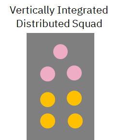
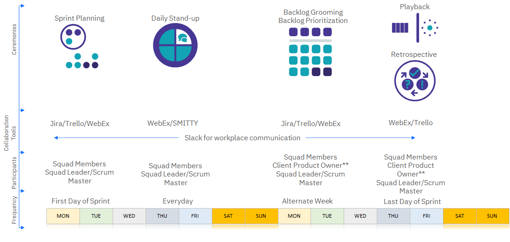

Delivery Model
Table of Contents
1. Garage
Objective
This section is used to highlight a Collaborative Delivery Model that is both organic & immersive and provides value for our clients.
| Garage |
|---|
IBM’s Approach
We offer a unique way of engaging through co-creation, joint squads, and the IBM Garage Method for Cloud to deliver organizational change and a new culture of speed and velocity that’s sustainable for the digital future.
- We think the best way to deliver co-creation to the clients is through joint squads
- There should be SMEs from both IBM and from the client to ensure that skills are being transferred throughout the process
- They’re working together in a very agile, very iterative way to prioritize what’s getting developed
There are three distinct ways of delivery build applications on cloud:
- Envision: Quick engagement similar to a PoC that does high level architecture and defines the MVP
- MVP: Actually building an MVP deployed to production – also contains elements of design and analyse
- Scale: Full engagement with multiple teams
| IBM Approach |
|---|
| Envision | MVP | Scale | |
|---|---|---|---|
| Outcomes | - Architecture and Blueprint - MVP Definition - Journey Map - User Story Backlog - Journey Maps | - Blueprint & E2E Architecture - MVP Deployed to Production - 12-30 Microservices - 135-270 story points with varying complexity | - 2-5 Microservices per Month - Deployment across geos, LOBs - Co-Creation and Skills Transfer - Organizational Change - New technology adoption and skillset(AI, Analytics, Automation, Blockchain) |
| Key Activities | - IBM Garage Design Thinking Workshops - Cloud Advisory Assessment - Experience Led Development | - Set up Dev & Test Environments - Joint Development Squads - Coexistence, E2E Testing and Integration | - Organizational Change Management - Employee Engagement - Digital Change - Full Dev & Test |
| Duration | 3 Month Week | 3-6 Months | 6+ Months |
| Deployment Model | Multi-cloud, On-prem | Multi-cloud, On-prem | Multi-cloud, On-prem |
2. Dynamic Delivery
Leveraging the Power of Co-Creation
Globally Distributed Flexible Squad Composition
A program / account can have various flavors of these squad compositions, based on the workload & requirement. Some programs can start onsite heavy, and may move towards more offshore depending on the workload shifts and productivity.
Co-located Squad
- Workloads that can be split into independent deployment units
- Co-Creation - MVP/PoC using layered delivery
| Squad Model |
|---|
 |
Vertically Integrated Distributed Squad
- Workloads that have huge dependency between modules
- Co-Creation with Clients and squads across multiple locations
| Squad Model |
|---|
|  |
Ceremonies & Collaboration
For Location Independent Distributed Squads,
- Ceremonies should happen in overlapping time zone
- Tools to enable location independent collaboration
- Client Product Owner is required for Backlog Grooming, Prioritization, Playback and formal acceptance of user stories by end of sprint
| Dynamic Collaboration |
|---|
|  |
Challenges of Distributed Agile
- Distributed Agile promotes Federated Innovation and taps into Specialized Talents available in various development centers
- ‘Follow-the-Sun’ approach contributes towards ‘Faster Time to Market’
Communication
- Use visuals in communication / user story
- Reduce team dependency in assigning work items
- Use of Technology for team synergy – WebEx
Accessibility
- Plan work time overlap across locations
- Add handover as an agenda in Daily Meeting
- Come up with Proxy roles for location
Squad Structure
- Enable horizontal communication of peers
- Squad size limited to around 8 resources
- Virtual task-board to ease collaboration and sharing
Delivery
- Parallel Scrums for distributing the workloads
- Assign entire logical work to squads in same time zone
- Integration Sprint